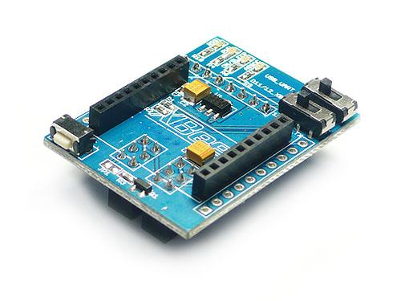
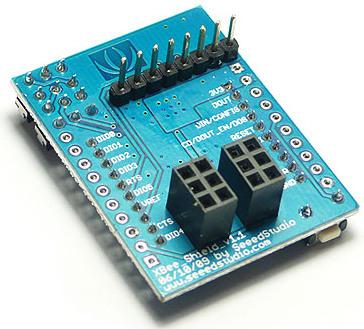
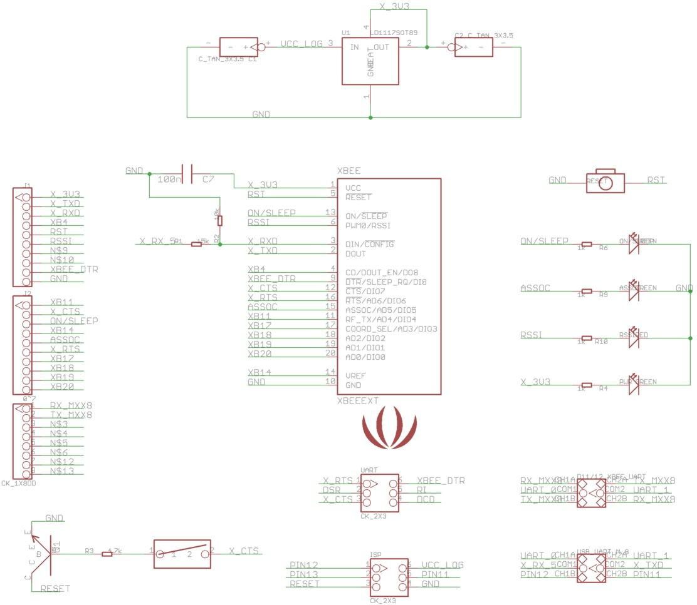
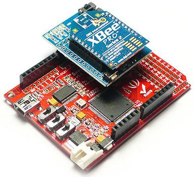
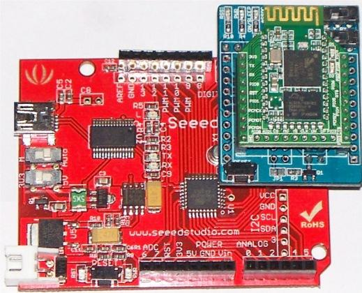
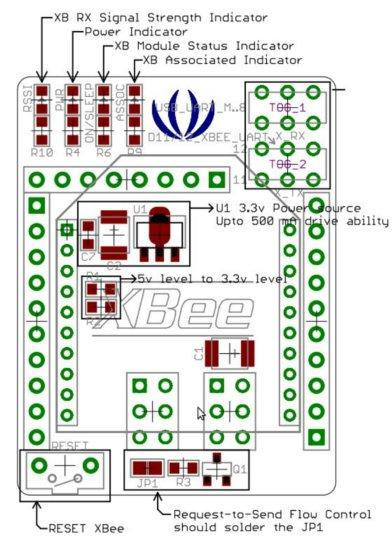

A Xbee shield allows an Arduino or Seeeduino board to communicate wirelessly using Bee compatible modules (like Zigbee or BlueTooth Bee). It is designed to be used with Xbee module from MaxStream. It can be used as a Serial Port / USB replacement. It is used to connect two Seeeduinos using Zigbee / Bluetooth Bee or connect a Seeeduino with PC Wirelessly. Two toggle switches decides how Rxd and Txd pins of Bee modules be connected to Seeeduino pins. These two switches provides options to connect RxD and TxD lines of Bee Modules to Seeduino Hardware Serial Port or Digital pins 11 and 12 or FTDI RxD and Txd Pins.
Model:WLS114A0P
 
Seeed Studio's XBee®_Shield is derived from Arduino Xbee shield, with following features:
To use X-CTU with Seeeduino, please upload following sketch
void setup()
{
DDRB=0;
DDRC=0;
DDRD=0;
}
void loop()
{
}

See features above.
XBee® Shield is of 3.1cm X 4.1cm size.
A Bee module is connected to Arduino / Seeeduino via the XBee Shield. In case of a Seeeduino, set the operating voltage switch to 3.3V position. Normally the Bee modules are connected via Software Serial Port by setting the toggle switches (TOG_1 and TOG_2)positions to left-side. Please refer the below tables for different configuration.
 

| TOG_1 | TOG_2 | Xbee Tx Connected to | Xbee Rx Connected to |
|---|---|---|---|
| Left | Left | Digital pin 11 | Digital pin 12 |
| Left | Right | FT232 RxD | FT232 TxD |
| Right | Left | Digital pin 11 | Digital pin 12 |
| Right | Right | Atmege RxD | Atmege TxD |
| TOG_1 | TOG_2 | Xbee Tx Connected to | Xbee Rx Connected to |
|---|---|---|---|
| Left | Left | Digital pin 51 | Digital pin 50 |
| Left | Right | FT232 RxD | FT232 TxD |
| Right | Left | Digital pin 51 | Digital pin 50 |
| Right | Right | Atmege RxD0 | Atmege TxD0 |
Create a new sketch with the following code and download it into your Arduino board.
//Serial Relay - Arduino will patch a
//serial link between the computer and the Bee Shield
//at 9600 bps 8-N-1
//Computer is connected to Hardware UART
//Bee Shield is connected to the Software UART
#include <NewSoftSerial.h>
#define RxD 11
#define TxD 12
NewSoftSerial mySerial(RxD,TxD);
void setup()
{
pinMode(RxD, INPUT);
pinMode(TxD, OUTPUT);
mySerial.begin(9600); // the Bee baud rate
Serial.begin(9600); // the terminal baud rate
}
void loop()
{
if(Serial.available())
{
mySerial.print((unsigned char)Serial.read());
}
else if(mySerial.available())
{
Serial.print((unsigned char)mySerial.read());
}
}
After this fire up your favorite serial terminal software, choose the COM port for Arduino, set it to operate at default baud rate of your Bee (XBee default is 9600 8-N-1), connect and send the commands. Try sending "+++" (without the quotes) for XBee module, to the Arduino board. The XBee should respond by sending back an "OK".
The code above may have worked on earlier versions but the SoftwareSerial library is now part of the core. The following code is taken almost directly from the Aruino SoftwareSerial manual.
/*
Example from Arduino SoftwareSerial tutorial
*/
#include <SoftwareSerial.h>
SoftwareSerial mySerial(11, 12); // RX, TX
void setup()
{
// Open serial communications and wait for port to open:
Serial.begin(9600);
mySerial.begin(9600);
}
void loop() // run over and over
{
if (mySerial.available())
Serial.write(mySerial.read());
if (Serial.available())
mySerial.write(Serial.read());
}
Upload this code to the Arudino hosting the Xbee Shield, startup the Serial Monitor and at that point the Arduino serial port will be connected via radio to any other xbee radios currently operating--anything you type in the serial monitor will be sent to the other radios and vise versa.
The following sketch configures Bluetooth Bee as Slave Device and waits for connection request from PC or other master device. Bluetooth Bee is connected to Seeeduino via XBee®_Shield as shown above.
/*
BluetoothBee Demo Code - Flowcontrol Based Implementation
2010,2011 Copyright (c) Seeed Technology Inc. All right reserved.
Author: Visweswara R
This demo code is free software; you can redistribute it and/or
modify it under the terms of the GNU Lesser General Public
License as published by the Free Software Foundation; either
version 2.1 of the License, or (at your option) any later version.
This library is distributed in the hope that it will be useful,
but WITHOUT ANY WARRANTY; without even the implied warranty of
MERCHANTABILITY or FITNESS FOR A PARTICULAR PURPOSE. See the GNU
Lesser General Public License for more details.
You should have received a copy of the GNU Lesser General Public
License along with this library; if not, write to the Free Software
Foundation, Inc., 51 Franklin St, Fifth Floor, Boston, MA 02110-1301 USA
For more details about the product please check http://www.seeedstudio.com/depot/
Upload this sketch to Seeeduino and press reset*/
#include <NewSoftSerial.h> //Software Serial Port
#define RxD 11
#define TxD 12
#define DEBUG_ENABLED 1
NewSoftSerial blueToothSerial(RxD,TxD);
void setup()
{
pinMode(RxD, INPUT);
pinMode(TxD, OUTPUT);
setupBlueToothConnection();
}
void loop()
{
//Typical Bluetoth command - response simulation:
//Type 'a' from PC Bluetooth Serial Terminal
//See Wiki for instructions
if(blueToothSerial.read() == st0">'a')
{
blueToothSerial.println(st0">"You are connected"); //You can write you BT communication logic here
}
}
void setupBlueToothConnection()
{
blueToothSerial.begin(38400); //Set BluetoothBee BaudRate to default baud rate 38400
delay(1000);
sendBlueToothCommand(\r\n+STWMOD=0\r\n");
sendBlueToothCommand(\r\n+STNA=SeeeduinoBluetooth\r\n");
sendBlueToothCommand(\r\n+STAUTO=0\r\n");
sendBlueToothCommand(\r\n+STOAUT=1\r\n");
sendBlueToothCommand(\r\n +STPIN=0000\r\n");
delay(2000); // This delay is required.
sendBlueToothCommand(\r\n+INQ=1\r\n");
delay(2000); // This delay is required.
}
//Checks if the response "OK" is received
void CheckOK()
{
char a,b;
while(1)
{
if(blueToothSerial.available()) { a = blueToothSerial.read(); if(st0">'O' == a)
{
// Wait for next character K. available() is required in some cases, as K is not immediately available.
while(blueToothSerial.available())
{
b = blueToothSerial.read();
break;
}
if('K' == b)
{
break;
}
}
}
}
while( (a = blueToothSerial.read()) sy3">!= sy2">-1)
{
//Wait until all other response chars are received
}
}
void sendBlueToothCommand(char command[])
{
blueToothSerial.print(command);
CheckOK();
}
Please list your question here(if any).
If you have questions or other better design ideas, you can go to our forum or wish to discuss.
| Revision | Descriptions | Release Date |
|---|---|---|
| XBee® Shield V1.1 | new version by Seeedstudio | Jul 06, 2009 |
Bug Tracker is the place where you can sumbit any bugs you think you might have found during use. Please write down what you want to say, your answers will help us improve our products.
The Additional Idea is the place to write your project ideas about this product, or other usages you've found. Or you can write them on Projects page.
Click here to buy : http://www.seeedstudio.com/depot/xbee%C3%82%C2%AE-shield-v11-by-seeedstudio-p-419.html?cPath=104_109
This documentation is licensed under the Creative Commons Attribution-ShareAlike License 3.0 Source code and libraries are licensed under GPL/LGPL, see source code files for details.
Links to external webpages which provide more application ideas, documents/datasheet or software libraries.